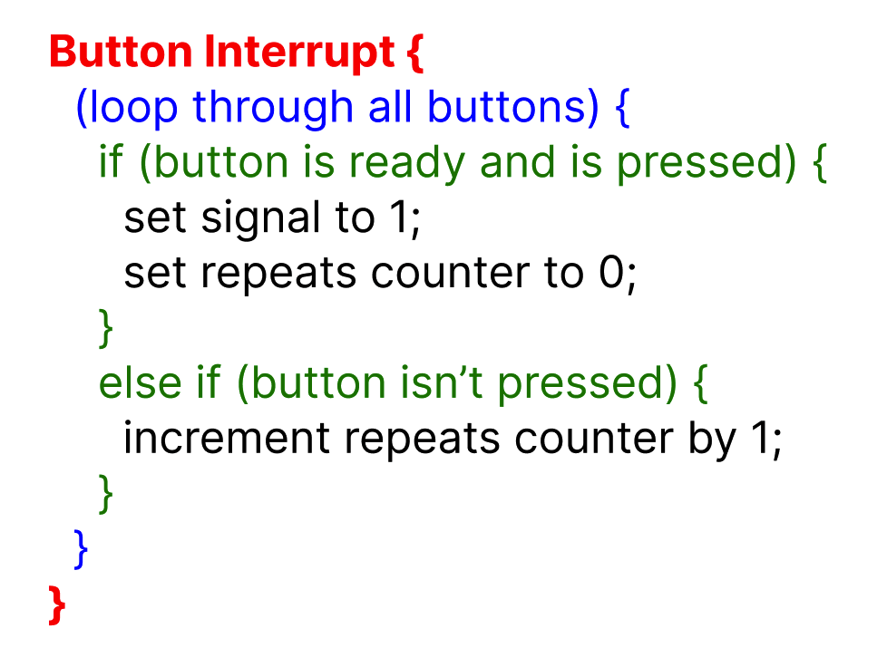
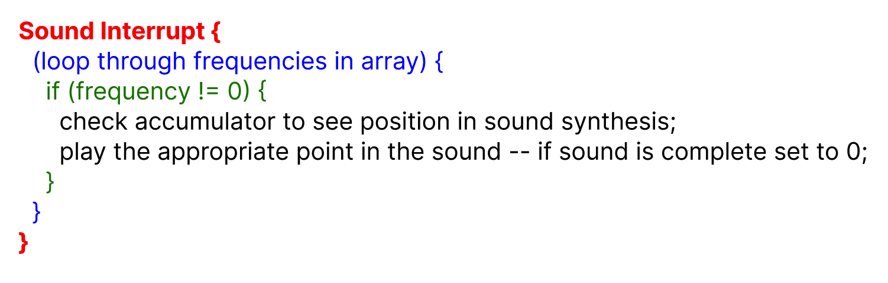
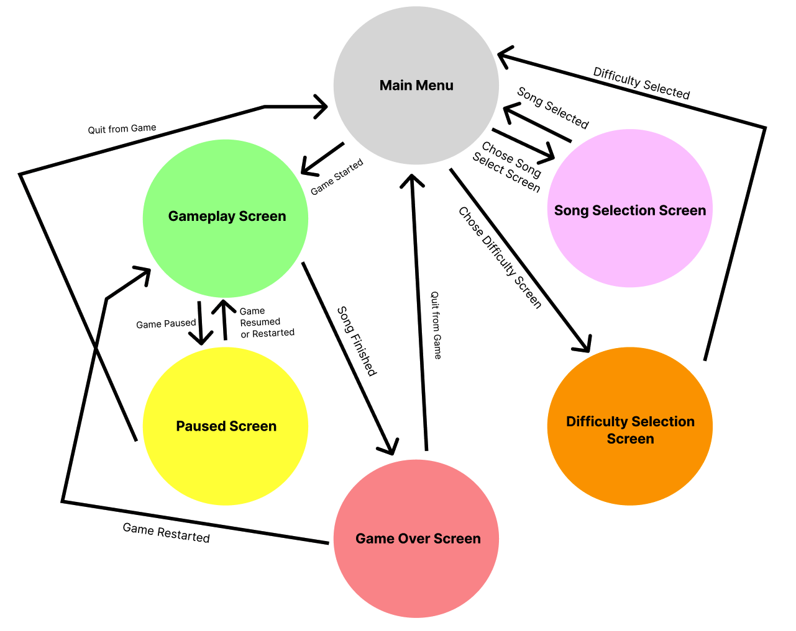
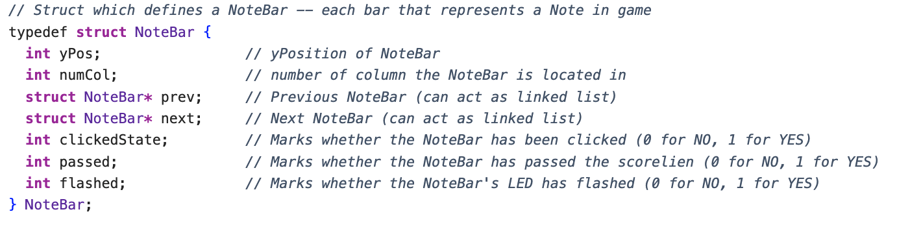
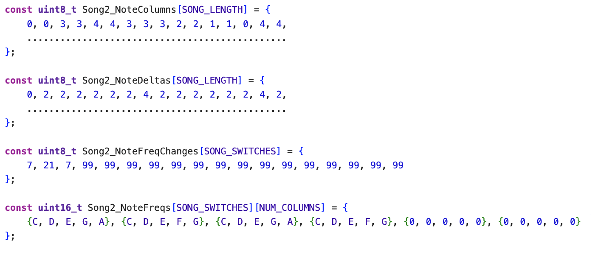

Program Design
The Main Threads/Interrupts
The program has three main operations that it runs: the main game loop (core 0), the button interrupts (core 0), and the audio synthesis interrupts (core 1). The game loop is a thread and is self-explanatory - we will explain this in more detail in a bit. However, the motivation behind the button interrupts and audio synthesis interrupts may not be as intuitive.
The Button Interrupts
We introduced the button interrupts because we experienced a particularly unique problem when working with our arcade-style buttons. The problem was that it usually double counted button clicks no matter how long a button was held down for. This meant we couldn’t just check the GPIO pin for each button because its GPIO output wasn’t indicative of its actual state. So, we created a timer interrupt that runs once every 900 microseconds, maintains some state variables (stored in global arrays) for each button, and polls each of the buttons to determine whether it is on or off.
Each button has a “repeats” counter and a “signals” signal. The repeats counter counts for how many interrupts the button is detected to be in the OFF state. If the repeat counter is less than 10, then it isn’t ready to be clicked again. However, if it reaches 10, it can be clicked.
Once a button is clicked, its repeat counter will be be set to 0 and its signal will be set to 1. This signal variable is essential because since button clicks are being recorded asynchronously, the rest of the program needs to know when a button has recently been clicked. So, when the signal for a button is set to 1, this means that a button was recently clicked, and once the main thread reads this, it resets the button’s signal to 0.

Pseudo-code for what is performed in the button interrupts
The Audio Synthesis Interrupts
We added the audio synthesis timer interrupt for two reasons. First, we didn’t want it to affect game performance. For this reason, we added it to core 1. Second, we wanted the frequency to sound very smooth and have no interruption.
The tricky part in the design was getting the audio to play. Just like in the crickets lab, we used direct digital synthesis. However, we wanted to trigger these sounds to play when a specific action occurred (when a button was pressed) - we didn’t want the sound to play continuously on loop. Because audio synthesis occurs on core 1, this requires communication between core 0 and core 1 through the PT_FIFO_READ and WRITE operations. So, when core 0’s main thread detects a button signal, it writes the frequency corresponding to this button into the FIFO. Core 1’s main thread constantly reads from the FIFO, so it is able to detect that core 0 wants it to play a specific frequency. At this point, the thread adds data to a global array that instructs the audio synthesis interrupt to begin playing a synth sound at the specified frequency. The interrupt loops over this array to check what frequencies it needs to play. If it has any number of frequencies, it will play them all until they have been held for their total duration. If it doesn’t have any frequencies, it will simply remain silent and begin to play once core 0 provides it with some. This is how we were able to synthesize audio (even multiple notes at once) without impacting our performance.

Pseudo-code for what is performed in the sound interrupts
The Game Loop Thread
The game loop thread was the most complex part of the project as it handled a lot! The body of it manages the screen state - essentially, what screen is currently displayed. There are 6 main screens it switches between:
- Home Screen/Menu Screen
- Gameplay Screen
- Paused Screen
- Game-Over Screen
- Song Selection Screen
- Difficulty Selection Screen
So, we track the screen state using 2 global variables called curScreenState and oldScreenState. The reason we use 2 is so that when curScreenState changes and no longer equals oldScreenState, we can indicate a screen state change and reset the screen drawing accordingly. A FSM of the screen state is shown below.

FSM for screen state
Screens such as the Song Selection Screen and the Difficulty Selection Screen weren’t too difficult to implement as they mainly just changed certain global variables (such as the data that controlled the song and difficulty for the next game). The most difficult screen to implement was the Gameplay screen.
The Actual Gameplay
The main element of the gameplay is the NoteBar struct. A NoteBar is the “object” that indicates when a player has to press a button to score points. The implementation of NoteBars in our code is shown below.

Code implementation of NoteBar struct
While many of the variables within the NoteBar are well-explained by the comments, the next and prev pointers may be less clear. We added these to allow NoteBars to act like a linked list so that in each iteration of the game loop, the game loop can loop through all of the NoteBars on the screen, update their position, and redraw them. This also allows the game to remove NoteBars with ease. The reason a linked list works with our implementation is because each NoteBar moves down the screen at a constant speed predetermined by the game’s difficulty, so a NoteBar that is further up the screen should never disappear before a NoteBar below it.
As mentioned, the implementation of the NoteBar is essential because it allows us to easily loop through all of the NoteBars and redraw them to produce a functional game. Aside from this, our gameplay contains functions to check if any buttons have been clicked and to send a message to core 1 to play the appropriate sound. It also contains a yield to keep the frame rate constant. If the frame rate wasn’t constant, then rendering less NoteBars would result in much faster game play and more NoteBars would result in much slower gameplay, which would make the song sound super inconsistent.
The last essential part to explain how the program for our game works is to explain how we encoded the data for songs.
Encoding Songs
We needed 4 main pieces of data to encode a song:
- What column a NoteBar would appear in
- What time a NoteBar would appear in such column
- What frequency would be played when a specific button was hit
- When the appropriate time to play such frequency would be
The reason we needed 3 and 4 was because we were only able to put 5 columns in the game, but most songs include more than 5 notes. So, if we wanted to play more complex songs, we’d need to include more frequencies.
To explain how we encode these songs, we will use an example from our code:

First part of the encoding for Twinkle Twinkle Little Star
Song2_NoteColumns - this contains the column from which each NoteBar will spawn. The 0th NoteBar will spawn in the 0th column, the 1st in the 0th column, the 2nd in the 3rd column, the 3rd in the 3rd column, etc. The end of a song is marked by a 9 in the array.
Song2_NoteDeltas - this contains the number of beats that elapses between each NoteBar before the next is spawned. The 0th element is always 0, so really the n + 1 element in this array marks the amount of beats that must occur after the n NoteBar is spawned and before the n + 1 NoteBar is spawned. For example, after we spawn the 0th NoteBar in the 0th column, the program will wait for 2 beats before it releases the second NoteBar in the 0th column.
Song2_NoteFreqs - this is the only 2D array, and it indicates which frequencies will be played at certain periods in the song. Each sub-array has 5 elements and corresponds to each of the 5 buttons as expected. So, in the 0th period, the 4th button (starting at 0) will play an A, but in the 1st period, the 4th button will play a G.
Song2_NoteFreqChanges - this indicates how many notes make up a period. For example, the 0th period will be 7 notes long, the 1st period will be 21 notes long, the 2nd period will be 7 notes long, and the 3rd period will last until the end of the song.
With all of these elements put together, we were able to construct a well-functioning, cohesive game that is very entertaining to play!
Code Originating from Other Sources
We didn’t take much from other sources except for for direct-digital synthesis and code for displaying to VGA. We used code from lab 1 for direct-digital synthesis. However, we didn’t replicate this code exactly but instead followed a very similar structure and used it to understand implementation. We also used the vga_graphics library from lab 2 to be able to more easily create drawings on the VGA screen.
Things We Tried That Didn’t Work
We experienced a lot of trouble with how we structured our code. Throughout many points in the project, we tried using structs. We tried to use them to represent the game state and to represent the synthesis for sound. In both cases, the structs would be arguments passed into functions that would manipulate its variables through its pointer. However, this didn’t work either time and caused the game to crash, so we abandoned this and instead used global variables as the primary way to manage state in the game. We spent almost two weeks on this issue.
Another issue we faced was that our original goal was to be able to play drum songs without hardcoding the music. However, after visualizing FFTs of multiple songs, we realized this would be near impossible, so we decided to pivot to Syynth Hero instead.